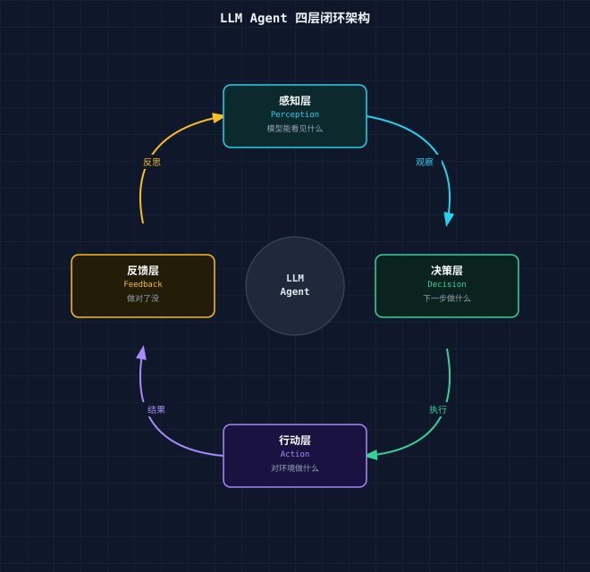
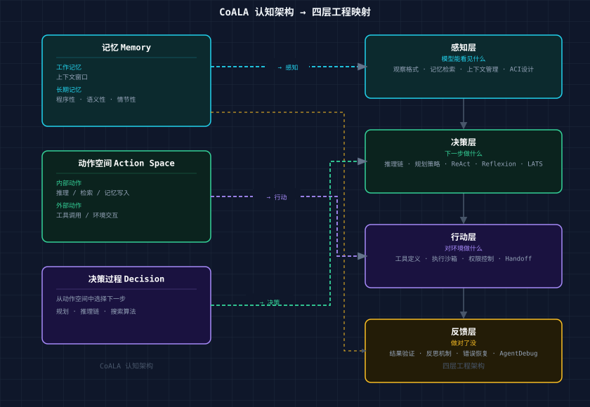
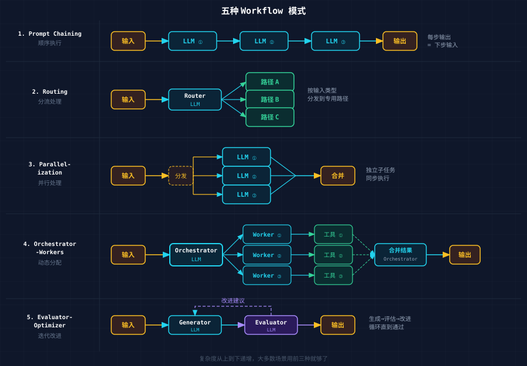
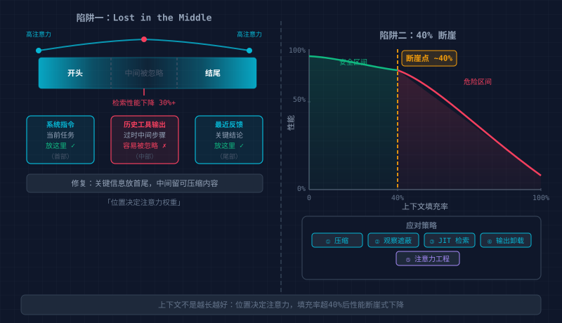
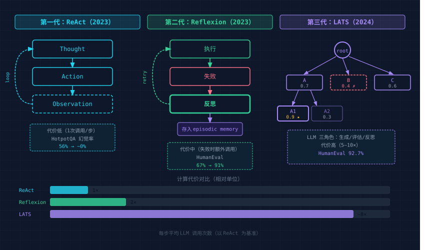
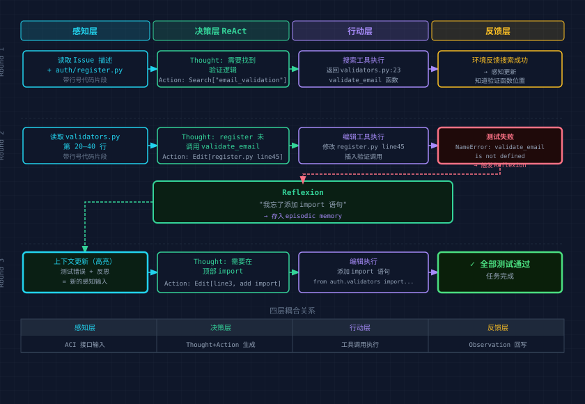

2024 年，Princeton 团队做了一个实验：把 GPT-4 接入 SWE-bench（一个真实的 GitHub Issue 修复基准），模型没换，训练数据没动，只改了一件事——接入模型的那套接口重新设计了一遍。
通过率从 3.8% 跳到了 12.5%。
同年，Anthropic 把 Claude 3.5 Sonnet 接入一套精简框架，两个工具（Bash + Edit）加一条约束（强制绝对路径）。SWE-bench Verified 得分：49%。
同一个模型，从 3.8% 到 49%。差距不在模型，在结构。
Agent 不是"聊天机器人加了几个工具"。它是一个控制系统。核心问题不是怎么生成更好的回答，而是怎么在开放环境中持续完成目标。
控制系统有一个经典结构：传感器采集信息 → 控制器做出决策 → 执行器改变环境 → 反馈回路检验效果。这个结构在工业控制、机器人、自动驾驶中反复出现，因为它是任何需要在不确定环境中持续运行的系统的最小完备架构。
LLM Agent 也收敛到了同样的结构：
感知 → 决策 → 行动 → 反馈 → 感知 → ...
这篇文章拆解这四层：每一层在做什么，为什么这么设计，工程上怎么落地。
2023 年，CoALA（Cognitive Architectures for Language Agents）试图回答一个问题：所有 LLM Agent 的共同结构是什么？
答案是三个组件：
记忆，分为工作记忆（当前上下文窗口里的内容）和长期记忆（外部存储）。长期记忆又分三种：
动作空间，Agent 能做的所有事情，分为内部动作（推理、检索、写入记忆）和外部动作（调用工具、与环境交互）。
决策过程，从动作空间中选择下一步的机制。
三者组合起来构成一个完整的认知架构。任何 Agent 系统，不管它用什么框架、什么模型，都可以用这套词汇来描述和分析。
CoALA 的形式化与控制论的四层闭环之间存在清晰的对应：
| 层 | CoALA 对应 | 核心问题 | 工程关注点 |
|---|---|---|---|
| 感知 | 工作记忆的输入 | 模型能看见什么 | 观察格式、记忆检索、上下文管理 |
| 决策 | 决策过程 | 下一步做什么 | 推理链、规划策略、搜索算法 |
| 行动 | 外部动作空间 | 对环境做什么 | 工具定义、执行沙箱、权限控制 |
| 反馈 | 观察 → 记忆更新 | 做对了没 | 结果验证、反思机制、错误恢复 |
四层各有独立的工程问题，也有跨层的耦合关系，后面逐层展开，最后再讲耦合。

Anthropic 在工程指南中做了一个关键区分：
Workflow（编排型），LLM 和工具通过预定义的代码路径编排，步骤确定，开发者写死了流程，适合定义清晰的任务。
Agent（自主型），LLM 动态决定自己的执行路径和工具使用，步骤不可预测，模型自己选择下一步，适合开放式问题。
选择原则：从最简单的方案开始。Workflow 提供可预测性和一致性；Agent 提供灵活性，但代价是更高的成本、更难调试、错误会复利累积。只在复杂度确实需要时才升级到 Agent。
五种 Workflow 模式（复杂度递增）：

大多数生产系统用 Workflow 就够了，能解决的问题就不要上 Agent。
核心矛盾：上下文窗口有限，而环境信息无限。
模型不能直接"看见"环境，它看见的是喂给它的文本。感知层的设计决定了模型能理解什么、会忽略什么、在哪里犯错。
SWE-agent 的实验揭示了一个反直觉的事实：同一个模型，仅仅改变它与环境交互的接口格式，性能就能翻倍。
这个发现催生了一个概念：ACI（Agent-Computer Interface）。就像 HCI 为人类设计界面，ACI 为 LLM 设计界面。两者的需求完全不同：人类需要视觉、空间、交互；LLM 需要文本、顺序，且受限于上下文窗口。
三条设计原则：
最小认知开销，用模型在训练数据中自然见过的格式。Markdown 表格比自定义 XML 好，带行号的代码比纯代码好，结构化错误信息比 raw stack trace 好。
先给上下文，再要求精确输出，不要上来就问"第 47 行应该改成什么"——先展示第 40-55 行的代码，再问。模型需要足够的 token 看清楚才能给出精确答案。
防错设计，强制绝对路径，消灭相对路径错误；用枚举参数替代自由文本；在工具定义里写清楚"不要做 X"。Anthropic 在 SWE-bench 开发中发现：花在工具接口设计上的时间，比花在 prompt 上的时间更有价值。
一个具体的例子是文件浏览：给模型看整个 2000 行文件，它会迷失在中间；给它一个分页查看器，每次 100 行，带行号，带当前位置标记，它能准确定位问题。这就是 ACI 设计的差距。
Lilian Weng 在综述中提出了 Agent 记忆的三层模型，对应人类认知科学中的记忆分类：
感知记忆（Sensory Memory），原始输入的第一层处理。对 Agent 来说，就是 API 返回的 raw JSON、终端输出的原始文本、截图的像素数据。持续时间极短，很快要么进入短期记忆，要么被丢弃。
短期记忆（Short-term / Working Memory），也就是上下文窗口，快但有限。128K token 看起来很多，但对一个需要跨越几十个文件、几百次工具调用的长任务来说，很快就不够了。
长期记忆（Long-term Memory），外部存储，包括向量数据库、文件系统、结构化数据库。容量无限但检索有延迟，且检索质量不稳定。
工程实现上，每层对应不同的技术方案：
| 层 | 实现 | 特点 |
|---|---|---|
| 感知记忆 | 工具输出格式化 | ACI 设计管这里 |
| 短期记忆 | 上下文窗口管理 | 压缩、裁剪、摘要 |
| 长期记忆 | RAG / 文件系统 / KV Store | 需要检索策略 |
Agent Patterns Atlas 提供了几个记忆相关的工程模式：
上下文窗口有一个不直觉的性质：不是越长越好。

Stanford 的"Lost in the Middle"研究发现，当关键信息落在长上下文的中间位置时，模型检索性能下降 30% 以上。即使窗口足够大，模型的注意力分布也不均匀——开头和结尾的信息更容易被注意到。
更严重的问题是：上下文超过窗口容量约 40% 后，性能开始急剧下降，不是线性衰减，是断崖式。Agent 在长任务中"跑着跑着就不对了"，很多时候不是推理能力退化，而是上下文已经腐化——充满了过时的工具输出、无关的中间步骤、早期的错误假设。
五种生产级上下文管理策略：
1. 压缩，把历史对话摘要化，保留关键决策和未解决问题，丢弃冗余的工具输出。ACON 研究表明：优先保留推理链（Thought）而非原始工具输出（Observation），token 减少 26-54%，准确率保持 95% 以上。
2. 观察遮蔽，JetBrains 的 Junie 实践：隐藏旧的工具输出内容，但保留工具调用记录可见。模型知道"我之前运行了测试"，但不需要再看一遍完整的测试输出。
3. JIT 检索，不预加载整个代码库，需要看文件时用 grep/glob/head 按需拉取。Claude Code 的实践：95% 的上下文节省来自按需加载而非全量预加载。
4. 工具输出卸载，2000 行的日志不塞进上下文，写入文件系统，上下文里只保留一句摘要和文件路径，需要时再读取特定部分。
5. 注意力工程，把最关键的信息放在 prompt 的开头和结尾。系统指令放最前面，当前任务放最后面，中间是可以被"忽略"的历史。
核心矛盾：搜索空间指数爆炸，而计算预算有限。
每一步决策，模型面对的是一个巨大的动作空间：调用哪个工具、传什么参数、还是先推理一下、还是回头检查之前的假设。决策层的设计决定了 Agent 在这个空间里怎么搜索、搜索多深、什么时候停下来。
Agent 的决策机制经历了三代演化，每代增加了计算成本，也抬高了能力上限。

第一代：ReAct（2023）
ReAct 确立了至今所有 Agent 的基础循环：Thought → Action → Observation。
Thought: 我需要找到这个函数的定义
Action: Search["def calculate_total"]
Observation: Found in src/billing.py, line 47-62
Thought: 看到了，问题在第 53 行的类型转换
Action: Edit[src/billing.py, line 53, ...]
Observation: File updated successfully推理和行动必须交替进行。纯推理（Chain-of-Thought）会产生幻觉，模型编造不存在的事实；纯行动（无 Thought 直接调用工具）会盲目执行，模型不知道为什么要做这一步。ReAct 通过显式的 Thought 步骤迫使模型先说清楚"我为什么做这一步"，再通过 Observation 用真实的环境反馈纠正推理。
HotpotQA 上的幻觉率从 56% 降到接近 0%。
但 ReAct 有一个局限：它是单线的，每一步做完就往前走，不回头。如果某一步走错了，后面所有步骤都建立在错误的基础上。
第二代：Reflexion（2023）
Reflexion 在 ReAct 的基础上加了一层：如果任务失败了，不是简单重试，而是先反思"为什么失败了"，把反思结果写入记忆，下次避免同样的错误。
Trial 1: 尝试 → 失败（测试不通过）
↓
反思: "我没有考虑到空数组的边界情况"
↓
存入 episodic memory
↓
Trial 2: 读取反思 → 调整方案 → 尝试 → 成功这是一种"语言强化学习"——不需要更新模型权重，用自然语言作为学习的介质。HumanEval（代码生成）的 pass@1 从 67% 提升到 91%。
但 Reflexion 也有局限：它只能在失败后学习。对于需要在行动前就深度规划的问题（比如博弈、优化），它仍然是被动的。
第三代：LATS（2024）
LATS（Language Agent Tree Search）把蒙特卡洛树搜索（MCTS）引入 Agent 决策。
不再是单线执行，而是构建一棵搜索树：
Root: 当前状态
├── Action A (评估分: 0.7)
│ ├── Action A1 (0.9) ← 最佳路径
│ └── Action A2 (0.3) ← 被剪枝
├── Action B (0.4) ← 低分，不展开
└── Action C (0.6)
└── ...LLM 承担三个角色：
HumanEval 达到 92.7% pass@1。但代价是巨大的——每一步决策需要多次 LLM 调用（生成 + 评估 + 可能的反思），成本是 ReAct 的 5-10 倍。
三代对比：
| 代 | 方法 | 循环结构 | 计算代价 | 适用场景 |
|---|---|---|---|---|
| 1 | ReAct | Think → Act → Observe | 低（1次调用/步） | 常规任务 |
| 2 | Reflexion | 执行 → 失败 → 反思 → 重试 | 中（失败时额外调用） | 需从错误中学习 |
| 3 | LATS | 多路搜索 + 评估 + 回溯 | 高（多次调用/步） | 高价值复杂决策 |
一个复杂任务（"修复这个 bug"）如果不拆分，模型要在一个巨大的搜索空间中找到完整路径。拆分后（"1. 定位错误 2. 理解原因 3. 写修复 4. 写测试 5. 验证"），每一步的搜索空间大幅缩小。
几种分解策略：
Orchestrator-Workers，一个中心 LLM 负责拆任务和分配，多个 worker 执行具体子任务，最后中心 LLM 合并结果，适合子任务之间相对独立的情况（如多文件修改）。
极端分解（Agent Patterns Atlas），每一步只做一件最小的、可验证的事。不是"实现登录功能"，而是"创建 login 函数签名 → 实现参数验证 → 实现数据库查询 → 实现返回值 → 写测试"，每步完成后立刻验证，错误不会累积。
自动课程（Voyager），Agent 自己生成下一个目标，不需要人类预定义任务列表。Voyager 在 Minecraft 中根据当前状态和已有技能，自动生成"下一个值得尝试的事情"，灵活但也最难控制。
Routing，根据输入类型分流到不同的专用路径。客服系统根据问题类型（退款/技术/咨询）路由到不同的处理 Agent。
过度规划是一个常见错误。
模型花了 10 步生成了一个完美的计划，然后第 2 步的执行结果就偏离了计划的假设，后面 8 步全部作废。
Anthropic 的工程原则直接：从最简单的方案开始。
实际的选择逻辑：
一条经验规则：如果 Agent 花了 30% 以上的 token 在"规划"上而不是"执行"上，规划粒度可能太细了，降低粒度，让执行层的反馈来指导后续方向。
核心矛盾：工具越多能力越强，但误选率也越高。
行动层定义了 Agent 的"手"——它能触达什么、改变什么。工具设计的好坏直接影响 Agent 能否把正确的决策转化为正确的执行。
Anthropic 在 SWE-bench 开发中积累了一条核心经验：花在工具设计上的时间应该超过花在 prompt 上的时间。
五条设计原则：
1. 格式自然，用模型训练数据中高频出现的格式。Markdown
比自定义 DSL 好，JSON 比 YAML 好（出现频率更高）。函数名用英文动词+名词（search_files
而不是 fs_query_op）。
2. 文档完整，工具描述不是给人看的，是给模型看的。它需要：一句话说清用途、参数的类型和约束、1-2
个使用示例、失败时返回什么、和相邻工具的区别（"用 edit_file
修改已有文件，用 create_file
创建新文件，不要混用"）。
3. 防错设计，强制绝对路径（消灭"当前目录是哪里"的歧义），参数用枚举而不是自由文本（mode:
"append" | "overwrite" 而不是 mode:
string），必填参数和可选参数明确区分。
4. 输出可读，工具的返回值是 Agent 的感知输入。一个返回 5000 行 raw JSON 的工具，等于给 Agent 塞了一堆噪音。结构化、摘要化、只返回 Agent 需要的信息。
5. 边界清晰，每个工具做一件事，工具之间不重叠。如果两个工具的使用场景模糊（"什么时候用 search 什么时候用 grep？"），模型就会出错。
可用工具超过 30 个时，模型的工具选择准确率开始明显下滑。改用动态加载（每步只暴露 Top 5-10 个最相关的工具），准确率提升约 30%。
在一个复杂的 Agent 系统中，可能有几十个甚至上百个工具。全部塞进 prompt，上下文爆炸；全部隐藏，Agent 不知道自己能做什么。
几种平衡策略：
静态全量暴露，简单，适合工具数 < 10 的场景。所有工具的 schema 始终在 prompt 里，模型随时知道自己的全部能力；但随着工具增加，prompt 越来越长，噪音越来越大。
动态加载，根据当前任务阶段，只暴露相关的工具子集。写代码时暴露文件操作工具，运行测试时暴露执行工具，搜索时暴露搜索工具。Vercel 在 v0 中删掉了 80% 的工具，反而得到了更好的结果。
Skill Discovery（Agent Patterns Atlas），Agent 运行时自行发现可用工具，不是预定义工具列表，而是通过查询一个工具注册表来获取当前可用的能力，适合工具集合会动态变化的场景（如 MCP 服务器连接/断开）。
技能库（Voyager），最激进的方案：Agent 不仅使用预定义工具，还能创造新工具。Voyager 把执行成功的代码片段自动存入技能库，下次遇到类似任务时检索复用，工具集合随着 Agent 的经验增长而增长。
Agent 能做的事越多，出错的后果就越严重，行动层必须有安全机制。
沙箱执行，文件操作限制在特定目录，网络请求限制白名单，代码执行在容器中，Agent 不能触达它不应该触达的东西。
权限最小化（Constrained Tool Use），Agent 只能用完成当前任务所需的最小工具集，不需要删除文件的任务就不暴露删除工具。
不可逆操作确认，删除、发布、支付这类操作在执行前必须经过人类确认。错误的代价不对称，这是结构性要求，不是信任问题。
Handoff 机制（OpenAI Agents SDK），当一个 Agent 判断当前任务超出自己能力范围时，把控制权转移给另一个更合适的 Agent，转移时携带完整的对话历史，确保上下文不丢失。
Voyager 引入了一种不同于 JSON 工具调用的行动方式：直接生成可执行代码。
传统方式：
{"tool": "move_to", "args": {"x": 100, "y": 64, "z": 200}}
{"tool": "mine_block", "args": {"block_type": "diamond_ore"}}Voyager 方式：
async function mineDiamonds(bot) {
await bot.navigate(100, 64, 200);
const block = bot.findBlock('diamond_ore', 5);
if (block) await bot.dig(block);
}代码的优势：
代价是需要更严格的沙箱。JSON 工具调用的安全边界很清晰（参数验证就够了）；代码执行的安全边界需要容器级别的隔离。
核心矛盾：即时反馈便宜但浅层，深层反馈有价值但贵。
没有反馈的 Agent 是一个开环系统，它不知道自己的行动产生了什么效果，只能盲目前进，错误会累积，一步错步步错。反馈层闭合了这个环路，让 Agent 能够感知行动的结果并据此调整。
不同类型的反馈，在延迟、成本和可靠性上差异巨大：
| 类型 | 来源 | 延迟 | 可靠性 | 成本 |
|---|---|---|---|---|
| 执行反馈 | 编译器、测试、API 返回码 | 即时 | 高（确定性） | 低 |
| 环境反馈 | 状态变化观察 | 秒级 | 中 | 低 |
| 评估反馈 | 另一个 LLM 评判 | 秒级 | 中（有偏差） | 中 |
| 反思反馈 | 模型自我审视 | 秒级 | 低（可能过度纠正） | 中 |
| 人类反馈 | 用户确认/纠正 | 分钟~小时 | 高 | 高 |
工程原则：能用确定性验证就不用 LLM 判断，能用 LLM 判断就不打扰人类。
Anthropic 推荐三类验证方式：
规则验证，测试通过了吗？类型检查过了吗？Linter 有没有报错？这是最可靠的反馈——确定性的、无偏差的、成本几乎为零。代码任务几乎都有规则验证的条件，优先用它。
视觉验证，UI 任务中，用 Playwright 截图，让模型或另一个评估器判断"界面是否符合预期"，适合无法用代码断言的视觉结果。
语义验证（LLM-as-Judge），用一个独立的 LLM（最好是不同的模型或不同的 prompt）来评估结果质量，适合开放式任务（"这段代码的可读性好不好？"）。
Claude Code 的实践验证了这一点：给模型一种验证自己工作的方式（哪怕只是运行测试），质量提升 2-3 倍。
Evaluator-Optimizer 模式：把验证做成迭代循环。一个 LLM 生成结果，另一个 LLM 评估并给出改进建议，然后第一个根据建议修改，适合翻译、写作等需要打磨的任务。
Reflexion 证明了自我反思的价值——Agent 在失败后生成文本反思，存入记忆，下次避免同样的错误。HumanEval 从 67% 到 91%。
但反思有一个被低估的风险：过度自我纠正。
研究发现，当模型被指示"再检查一下你的答案"时，在 58% 的情况下，它会把原本正确的答案改成错误的。这不是 bug，而是反思机制的结构性问题——模型倾向于"找到问题"来证明反思是有意义的，即使实际上没有问题。
工程实践中的约束：
AgentDebug（2025）的核心洞察：当 Agent 失败时，不要从头重跑整个任务，先定位失败点在执行链的哪个位置，然后只从那个点重新执行。
两类根因：
效果：成功率提升 26%。
错误分类决定恢复策略：
| 错误类型 | 策略 | 示例 |
|---|---|---|
| 瞬态 | 重试（指数退避） | API 超时、限流 |
| 语义 | 换策略 | 模型被内容过滤阻断 → 改写 prompt |
| 规划 | 从当前状态重新规划 | 原计划不可行 |
| 记忆 | 重新检索上下文 | 关键信息丢失 |
| 不可恢复 | 升级到人类 | 任务本身不可能 |
VIGIL（2025）更进一步：运行时持续监控 Agent 行为，检测到异常（循环、延迟飙升、输出退化）时自动诊断并生成修复方案，不需要等到任务完全失败。
Human-in-the-Loop 不是"Agent 不行了找人帮忙"，它是架构设计的一部分——在特定的节点上，人类介入是比自动化更优的选择。
何时交给人类：
人类检查点的位置应该预先设计好，而不是"失败了就问人"。好的人机协作像高速公路上的收费站——在关键节点短暂停下确认，而不是随时随地可能被打断。
四层不是独立的，用一个代码修复 Agent 的完整执行过程来展示它们之间的耦合：

任务：修复一个 GitHub Issue——"用户注册时邮箱验证不生效"
代码库的初始状态：auth/register.py
处理注册逻辑，auth/validators.py
里已有 validate_email
函数，但 register.py
从未调用它。
第一轮循环：
感知：Agent 读取 Issue 描述 + 相关代码文件（auth/register.py）。ACI
设计决定了它看到的是带行号的代码片段而不是整个文件。
决策（ReAct）：
Thought: Issue 提到邮箱验证不生效。我需要找到验证逻辑在哪里。
Action: Search["email_validation" in auth/]行动：搜索工具执行，返回 auth/validators.py:23
有一个 validate_email
函数。
反馈：环境反馈（搜索成功返回结果）→ 更新感知（现在知道了验证函数的位置）
第二轮循环：
感知：读取 auth/validators.py
的第 20-40 行。
决策：
Thought: validate_email 函数存在，但 register 函数没有调用它。问题在 register.py 而不是 validators.py。
Action: Edit[auth/register.py, line 45, add: if not validate_email(email): raise ValidationError(...)]行动：编辑工具执行修改。
反馈：运行测试 → 测试失败。
Error: NameError: validate_email is not defined第三轮循环（反思触发）：
反馈 → 感知更新：测试失败的错误信息进入上下文。Agent 同时触发 Reflexion："我忘了添加 import 语句。"
决策：
Thought: 我需要在文件顶部 import validate_email。
Action: Edit[auth/register.py, line 3, add: from auth.validators import validate_email]行动：编辑执行。
反馈：运行测试 → 全部通过 ✓
四层耦合关系：
| 耦合 | 表现 | 设计影响 |
|---|---|---|
| 感知 × 决策 | 搜索结果的格式直接影响推理质量 | ACI 设计决定了决策层的输入质量 |
| 决策 × 行动 | "添加验证"的规划粒度必须匹配 Edit 工具的能力 | 规划粒度要适配工具粒度 |
| 行动 × 反馈 | Edit 的返回"成功"不够，需要测试才能验证真正的正确性 | 行动结果 ≠ 任务成功，需要独立验证 |
| 反馈 × 感知 | 测试失败的错误信息 + 反思 = 下一轮的新感知 | 反馈质量决定了下一轮感知的信息量 |
如果四层之间的接口设计不匹配，系统性能会远低于各层单独的能力。一个优秀的决策层配上一个返回 raw dump 的感知层，整体表现会很差。SWE-agent 的实验证明了这一点——改善感知层的格式（ACI），在不改变决策层的情况下，整体性能翻了 3 倍。
你的任务步骤是否固定？
├── 是 → Workflow
│ ├── 步骤独立？→ Parallelization
│ ├── 步骤有序？→ Prompt Chaining
│ └── 需要分流？→ Routing
└── 否 → 步骤数可预测吗？
├── 是 → Orchestrator-Workers
└── 否 → Agent（自主循环）
├── 常规任务 → ReAct
├── 需要从失败中学习 → + Reflexion
└── 高价值复杂决策 → + LATS感知层：
决策层：
行动层：
反馈层：
| 坑 | 症状 | 根因 | 修复 |
|---|---|---|---|
| 感知过载 | 模型忽略关键信息、回答偏题 | 上下文太长或格式混乱 | JIT 检索 + 注意力工程 |
| 规划过深 | 计划完美但执行偏离 | 前几步的假设就错了 | 用 ReAct 替代长期规划 |
| 工具过多 | 频繁选错工具 | 工具描述重叠、数量超限 | 动态加载 Top 5-10 |
| 反思过度 | 正确答案被改成错误 | 无限自我怀疑 | 限 2-3 次 + 外部验证优先 |
| 无终止条件 | 无限循环、成本失控 | 缺少退出机制 | 轮次上限 + token 预算双保险 |
| 反馈缺失 | 错误累积不可逆 | 每步执行后无验证 | 每步验证 + 状态检查点 |
| 层间不匹配 | 各层单独可用但组合表现差 | 接口格式不兼容 | 检查各层的输入输出格式是否对齐 |
def run_agent(task: str, tools: list, max_turns: int = 20):
history = []
memory = load_long_term_memory(task)
for turn in range(max_turns):
# 感知层：组装上下文
context = assemble_context(
system_prompt=SYSTEM,
tools=select_relevant_tools(tools, history), # 动态工具加载
memory=memory,
history=compress_if_needed(history), # 上下文管理
task=task
)
# 决策层：模型推理
response = llm(context)
# 终止条件
if not response.tool_calls:
return response.text
# 行动层：执行工具
for call in response.tool_calls:
result = sandbox_execute(call) # 沙箱执行
history.append({"call": call, "result": result})
# 反馈层：验证
if should_verify(response.tool_calls):
verification = run_tests() # 确定性验证
if not verification.passed:
# 触发反思
reflection = reflect(history, verification.error)
memory.add_episode(reflection)
return "Max turns reached without completion"这 30 行代码覆盖了四层的核心逻辑。生产级系统在此基础上增加：错误分类与恢复、人机检查点、可观测性（日志/追踪）、持久化（跨会话状态）。